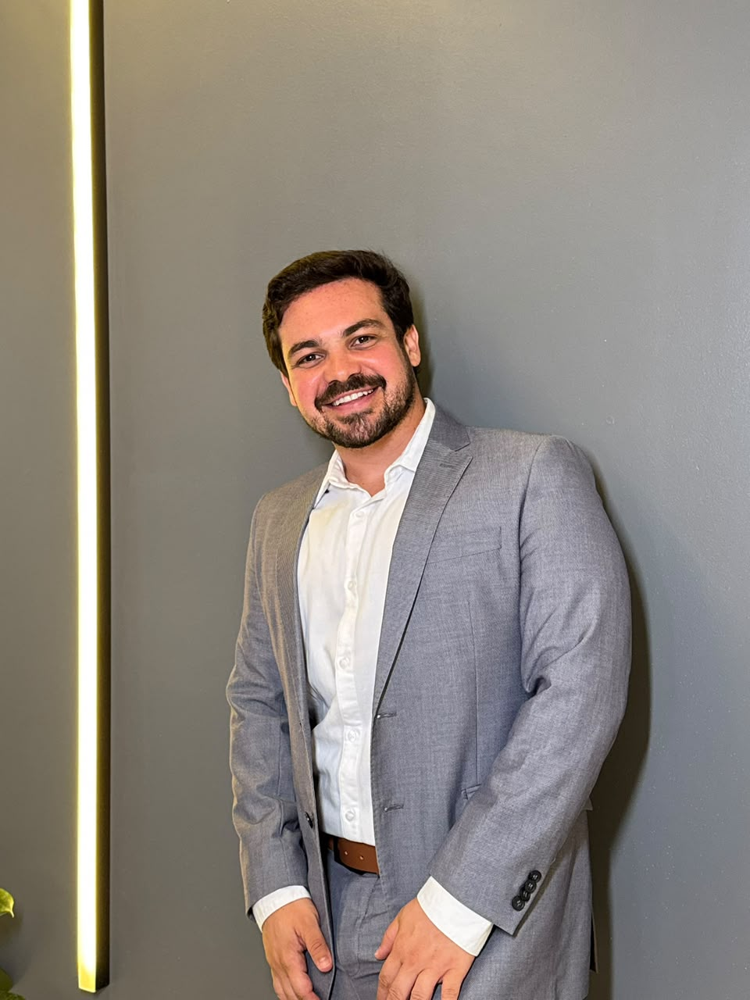
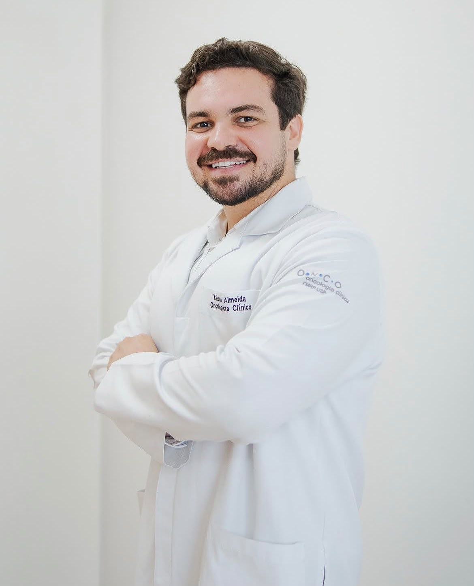

Oncologista Clínico
Atendimento especializado para pacientes oncológicos, tanto em consultório quanto em visita domiciliar. Comprometimento em fornecer cuidados abrangentes durante todas as fases do tratamento.
Oncologia clínica & cuidados paliativos
Acompanhamento especializado em todas as fases do tratamento, com atenção à pessoa, não apenas ao diagnóstico.

Um acompanhamento contínuo, adaptado a cada etapa do tratamento oncológico.
Atendimento especializado para pacientes oncológicos, tanto em consultório quanto em visita domiciliar. Comprometimento em fornecer cuidados abrangentes durante todas as fases do tratamento.
Conforto e qualidade de vida para pacientes com doenças graves, com foco no manejo da dor e dos sintomas, além de suporte emocional e psicológico para pacientes e familiares.
Planos de tratamento moldados às necessidades únicas de cada paciente, combinando tecnologia avançada com uma abordagem centrada na pessoa.

Conheça minha trajetoria
Sou Kaique Almeida, médico oncologista com formação em instituições de referência como UFPE e USP de Ribeirão Preto, além de especializações nacionais e internacionais em Oncologia e Cuidados Paliativos. Atuo no diagnóstico e tratamento de diversos tipos de tumores sólidos, sempre unindo conhecimento científico, atualização constante e uma abordagem humanizada. Atualmente, coordeno a Oncologia Clínica do Hospital Memorial São Francisco, atuo em importantes centros oncológicos e também exerço a docência em Medicina. Meu compromisso é oferecer um cuidado individualizado, baseado em evidências, empatia e respeito à história de cada paciente.
Entre em contato pelo WhatsApp para agendar uma consulta ou tirar dúvidas, ou acompanhe pelo Instagram.